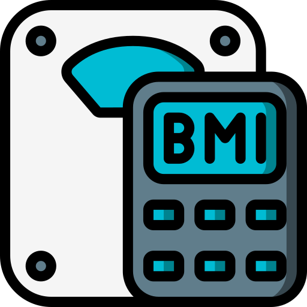

<ion-header [translucent]="true">
  <ion-toolbar color="primary">
    <ion-title>
      App BMI
    </ion-title>
  </ion-toolbar>
</ion-header>

<ion-content class="ion-padding ion-text-center"[fullscreen]="true">
<div class="ion-text-center">
 
</div>
<ion-card color="success" class="ion-padding" expand="block">
 <ion-card>
<ion-item>
  <ion-input label="กรอกน้ำหนัก" color="primary" placeholder="kg" [(ngModel)]="weight"></ion-input>
</ion-item>

<ion-item>
  <ion-input label="กรอกส่วนสูง" color="primary" placeholder="cm" [(ngModel)]="hight"></ion-input>
</ion-item>
 </ion-card>
  <br>

  <div class="ion-text-center">
    <ion-button color="warning" size="large" expand="block" (click)="oncal()">คำนวณ</ion-button>
  </div>
</ion-card>

<ion-card color="tertiary">
  <ion-card-header>
    <ion-card-subtitle>ผลลัพธ์</ion-card-subtitle>
    <ion-card-title>{{result |  number : '1.0-2'}}</ion-card-title>
  </ion-card-header>
</ion-card>

<ion-card color="danger">
  <ion-card-header>
    <ion-card-subtitle>แปลผล</ion-card-subtitle>
    <ion-card-title>{{result_text}}</ion-card-title>
  </ion-card-header>
</ion-card>

</ion-content>
